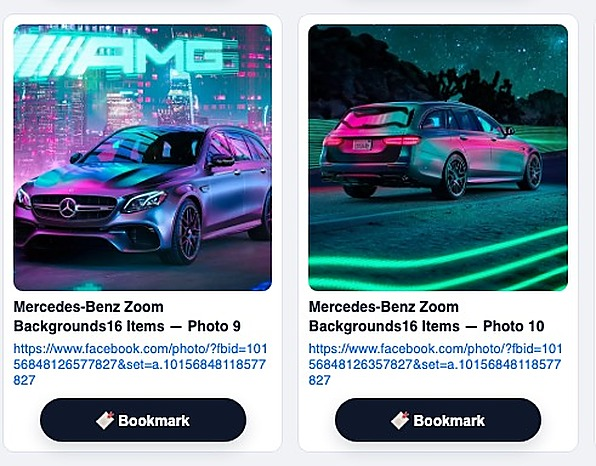
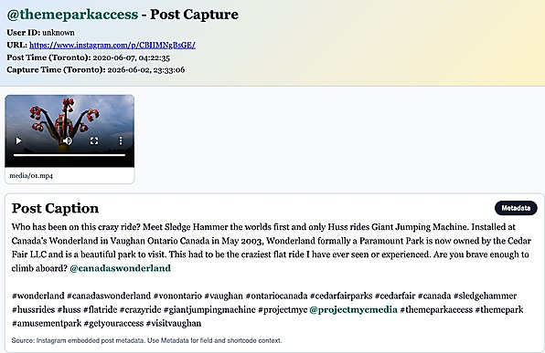
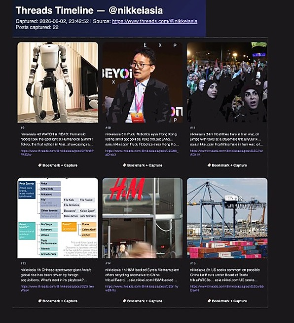
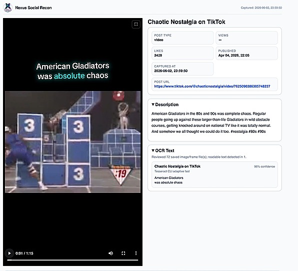

Capture
Profiles, posts, comments, replies, videos, images, screenshots, source URLs, local files, and SHA-256 records.
What It Does
Nexus Social Recon preserves the public source, captures local files, runs OCR and media intelligence, and keeps profiles, posts, comments, bookmarks, targets, hashes, and reports organized around the case.
Profiles, posts, comments, replies, videos, images, screenshots, source URLs, local files, and SHA-256 records.
Bookmarks, OCR, keyword hits, case targets, face/object/detail matching, account context, and profile themes.
User index cards, repeated identifiers, media fingerprints, cross-platform account matching, and cross-case intelligence.
HTML and PDF reports with thumbnails, source links, local paths, comments, OCR text, hashes, manifests, and investigator notes.
Supported Platforms
Nexus Social Recon includes dedicated modules for the places investigators commonly need to preserve public posts, profiles, comments, media, listings, relationships, and source-linked reports.




Investigation Workflow
The workflow follows how investigators actually move through social evidence: preserve the page, mark what matters, enrich findings, and package the record.
Start from a local case workspace with agency and investigator context.
Save public pages, media, comments, and source-linked records.
Keep the strongest evidence visible across platform modules.
OCR, target checks, visual matching, and user index enrichment.
Generate reports, media folders, hashes, and disclosure-ready files.
Explainable Matches
A useful lead is not enough. Nexus Social Recon is designed to show thumbnails, source links, local evidence links, confidence, and context so the investigator can decide what the match actually means.
Pricing Ladder
High-value intelligence features stay premium: live monitoring, visual target detection, cross-case memory, team collaboration, and cloud or server processing.
| Tier | Includes | Best Fit |
|---|---|---|
| Capture | Capture, reports, hashing, OCR, keyword reports, and local case management. | Baseline public evidence preservation and report generation. |
| Investigator | Capture plus case targets, face/object/detail matching, profile themes, target alerts, and richer media intelligence. | Investigators who need to triage and connect social evidence within active cases. |
| Intelligence | Investigator plus local encrypted index, historical collision detection, monitoring workflows, and cross-case intelligence. | Teams or advanced users who need memory across cases while staying local-first. |
| Team / Server / Managed | Shared indexes, governance, on-prem repositories, managed processing, retention, audit logs, and support options. | Organizations with shared evidence repositories, larger workloads, or controlled infrastructure needs. |
Nexus Social Recon is built for public-source evidence capture, investigator triage, media intelligence, and defensible reporting.